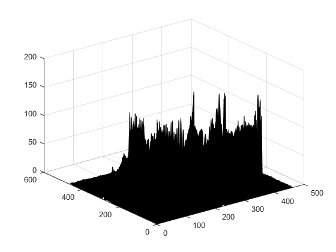

Contents
David Williams i Arnau Badia
im=imread('I:\vc\sample images\rabbit.jpg');
imshow(im)
figure,imhist(im)
bw = im > 100;
figure, imshow(bw), title('thr=100')
bw2=im>180;
figure, imshow(bw2), title('thr=180')
Airplane binaritzar
im=imread('I:\vc\sample images\airplane.tif');
figure, imshow(im)
figure, imhist(im)
bw = im >= 90;
figure, imshow(bw), title('thr=105')
text
im = imread('I:\vc\sample images\textsheet.jpg');
figure, imshow(im)
figure, imhist(im)
k = 0.8;
im2 = imfilter(im,ones(31)/31/31,'conv', 'replicate');
figure, imshow(k*im2, [])
figure, imshow(im > im2-25), title('thr=im2-25')
figure, imshow(im > im2*0.85), title('thr=im2*0.8')
Imatge mal il·luminada
im = imread('I:\vc\sample images\arros.tif');
figure, imshow(im)
bw = im2bw(im, 0.4);
figure, imshow(bw), title('llindar 0.4')
bw = im2bw(im, 0.6);
figure, imshow(bw), title('llindar 0.6')
figure, imhist(im)
th=graythresh(im)
bw = im2bw(im, th);
figure, imshow(bw), title('llindar otsu')
h=ones(51)/51/51;
mig=imfilter(double(im),h,'conv','replicate');
figure,imshow(mig,[]),title('average')
bw4= im > 1.1*mig;
figure,imshow(bw4),title('local threshold')
th =
0.4902
labelling
eti = bwlabel(bw4,4);
figure,imshow(eti),title('labelled image');
impixelinfo;
max(eti(:));
rgb=label2rgb(eti,@colorcube,'k');
figure,imshow(rgb),title('imatge etiquetada')
aux = find(eti==40);
figure, imshow(aux)
bw5 = (eti == 40);
figure, imshow(bw5)
Dades = regionprops(eti, 'all');
Arees = [Dades.Area];
Gros = find(Arees==676)
aux = (eti==Gros);
figure, imshow(aux)
mean(Arees)
figure, hist(Arees,100)
Warning: Region number 73 has the same color as the ZEROCOLOR.
Gros =
69
ans =
254.3333


rabbit contorn detection
im = imread('I:\vc\sample images\rabbit.jpg');
sobv = fspecial('sobel')
sobv = sobv/4;
Gy=imfilter(double(im), sobv, 'conv', 'replicate');
Gx=imfilter(double(im), sobv', 'conv', 'replicate');
mod = sqrt(Gx.*Gx + Gy.*Gy);
figure, imshow(mod, [])
bw = mod > 10;
figure, imshow(bw), title('thr=10')
figure, surf(mod)
res = edge(im, 'Canny',[0.1 0.2], 2);
figure, imshow(res)
sobv =
1 2 1
0 0 0
-1 -2 -1
